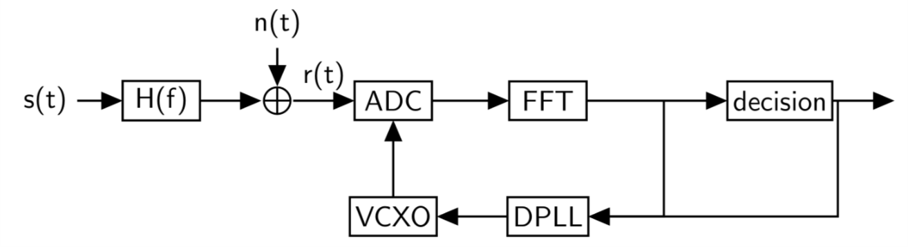
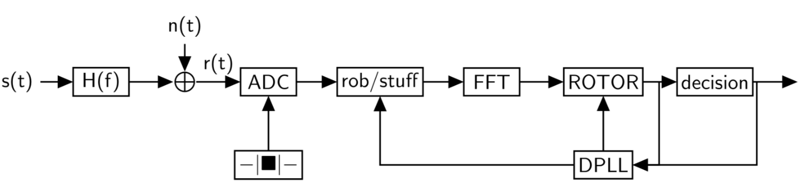

采样定时偏差及其纠正
1 采样定时偏差来源分析
采样定时偏差来源于接收机和发送机之间ADC和DAC采样频率的不同。由于晶振的偏差，接收端和发送端的DAC和ADC不可能有相同的频率，这样，采样定时偏差是不可避免的，接下来我们分析采样定时偏差对系统性能产生的影响以及如何利用已有信息克服这些影响。
采样定时偏差主要有两方面的影响主要体现在两方面：（1）符号定位点的漂移。这会造成子载波的旋转，不过可以通过频偏估计进行消除。（前文已经分析过，频偏估计结果可以有效的克服定位不准造成的子载波旋转。（2）子载波之间干扰（Intercarrier Interference）。采样定时偏差会造成采样时刻的偏转，导致子载波之间正交性的破坏。
为了克服采样定时偏差造成的影响，我们先对采样定时偏差对系统造成的影响在数学上进行描述。我们定义归一化的采样定时偏差为：
\begin{equation} \label{eq:2011041801} t_{\Delta}=\frac{T^{'}-T}{T} \end{equation}其中 \(T^{'}\) 和 \(T\) 是分别是接收端和发送端的采样周期。在存在采样定时偏差的系统中，接收到的第 \(l\) 个符号的第 \(k\) 个子载波上的符号是：
\begin{equation} \label{eq:2011041802} R_{l,k} = e^{j2\pi kt_{\Delta}l\frac{T_s}{T_u}}X_{l,k}sinc(\pi kt_{\Delta}) H_{l,k} + W_{l,k} + N_{t_{\Delta(}}(l,k) \end{equation}
其中 \(T_s,T_u\) 分别是一个OFDM符号的持续时间和OFDM符号中有效数据的持续时间， \(W_{l,k}\) 是加性白噪声， \(N_{t_{\Delta(}}(l,k)\) 是因为采样频率偏差引起的干扰，其功率是 \(P_{t_{\Delta}}\approx \frac{{\pi}^2}{3}(kt_{\Delta})^2\) ，可以看出因为采样频率偏差引起的干扰的功率随着采样时间的偏差和子载波数的增加而增加，所以可以确定偏离零频越远的子载波受采样频率偏差的影响越大。通常，WLAN系统的子载波个数较少，而且 \(t_{\Delta}\) 也较小，所以式(\ref{eq:2011041802})等号右边第三项造成的影响可以忽略不计。我们重点关注由采样频率偏差造成的相位旋转，即式(\ref{eq:2011041802})等号右边第一项。从表达式上看出由于采样频率偏差造成的相位和子载波个数和OFDM符号数有关。OFDM符号越是靠后，子载波序号越大，受采样频率偏差造成的影响就越大。我们知道在WLAN系统中 \(t_{\Delta}\) 较小，但是随着 \(l\) 和 \(k\) 的增大相位累积会越来越大，这就导致星座图的旋转，使得正确解调变的非常困难，这也就是为什么要纠正采样频率偏差的原因。事实上，采用频率偏差和残余频偏对系统造成的影响是一样的：都造成了星座图的旋转，从而导致不能正常解调。由此我认为纠正残余频偏的算法也可以在此使用，我会做实验证明这一点。
在已发表的文献中，比较实用的纠正采样频率偏差的方法是使用导频辅助的方法。在IEEE802.11a中每一个OFDM符号都有四个导频，它们的子载波序号是 \(-21,-7,7,21\) 。
导频信号按照其位置分布分为两个集合：在零频左边的为 \(C_1\) ，在零频右边的为 \(C_2\) 假设导频信号经过信道在接收端的形式如式(\ref{eq:2011041803})所示。
\begin{equation} \label{eq:2011041803} R_{l,k} = H_kP_{l,k}e^{j2\pi k t_{\Delta}l\frac{T_s}{T_u}} \end{equation}把相邻两个OFDM符号的相同位置上的子载波做相关运算。
\begin{eqnarray} \label{eq:2011041804} Z_{l,k} &=& R_{l,k}R_{l-1,k}^* \\ &=& H_kP_{l,k}e^{j2\pi k t_{\Delta}l\frac{T_s}{T_u}} (H_kP_{l-1,k}e^{j2\pi k t_{\Delta}(l-1)\frac{T_s}{T_u}})^* \\ &=& |H_k|^2|P_{l,k}|^2 e^{j2\pi k t_{\Delta}l\frac{T_s}{T_u}}e^{-j2\pi k t_{\Delta}(l-1)\frac{T_s}{T_u}}\\ &=& |H_k|^2|P_{l,k}|^2 e^{j2\pi k t_{\Delta}\frac{T_s}{T_u}} \end{eqnarray}接下来计算两个集合中导频的相位累积：
\begin{eqnarray} \label{eq:2011041805} \Phi_{1,l} &=& \angle [\sum_{k\in C_1} Z_{l,k}] \\ \Phi_{2,l} &=& \angle [\sum_{k\in C_2} Z_{l,k}] \end{eqnarray}采样定时偏差估计值为：
\begin{equation} \label{eq:2011041806} \hat{t}_{{\Delta}} = \frac{1}{2\pi} \frac{T_u}{T_s} \frac{1}{\min_{k\in C_2}(k) + \max_{k\in C_2}(k)}(\Phi_{2,l}- \Phi_{1,l}) \end{equation}
假设导频子载波均匀分布，我们定义归一化因子为 \(\min_{k\in C_2}(k) + \max_{k\in C_2}(k)\) 。
2 采样定时偏差的纠正过程

在上图中，采用同步纠正的方法，即在接收端通过实时纠正ADC的采样频率来消除采样定时偏差。理论上讲，这种方法可以完美的消除采样定时偏差。然而这种方法需要在接收机的模拟部分多加添加一些电路，使接收机的设计复杂，不符合接收机数字化的趋势。

在上图中，接收机的ADC采样频率是固定的，不需要额外的模拟电路去控制，减轻了接收机模拟电路的设计负担。我们称这种方法为非同步纠正方法。非同步纠正方法的接收机里多了两个模块：rob/stuff模块和ROTOR模块。rob/stuff模块的作用是：当接收机的ADC采样频率快于或者慢于发送端DAC的频率时，在ADC输出的数字信号里擦除或者插入采样点。添加rob/stuff模块的原因是：随着采样时刻的偏转，有可能使得采样时刻的漂移大于一个采样周期。ROTOR模块的作用是，根据DPLL估计出的采样定时偏差对接收到的数据进行相位纠正。